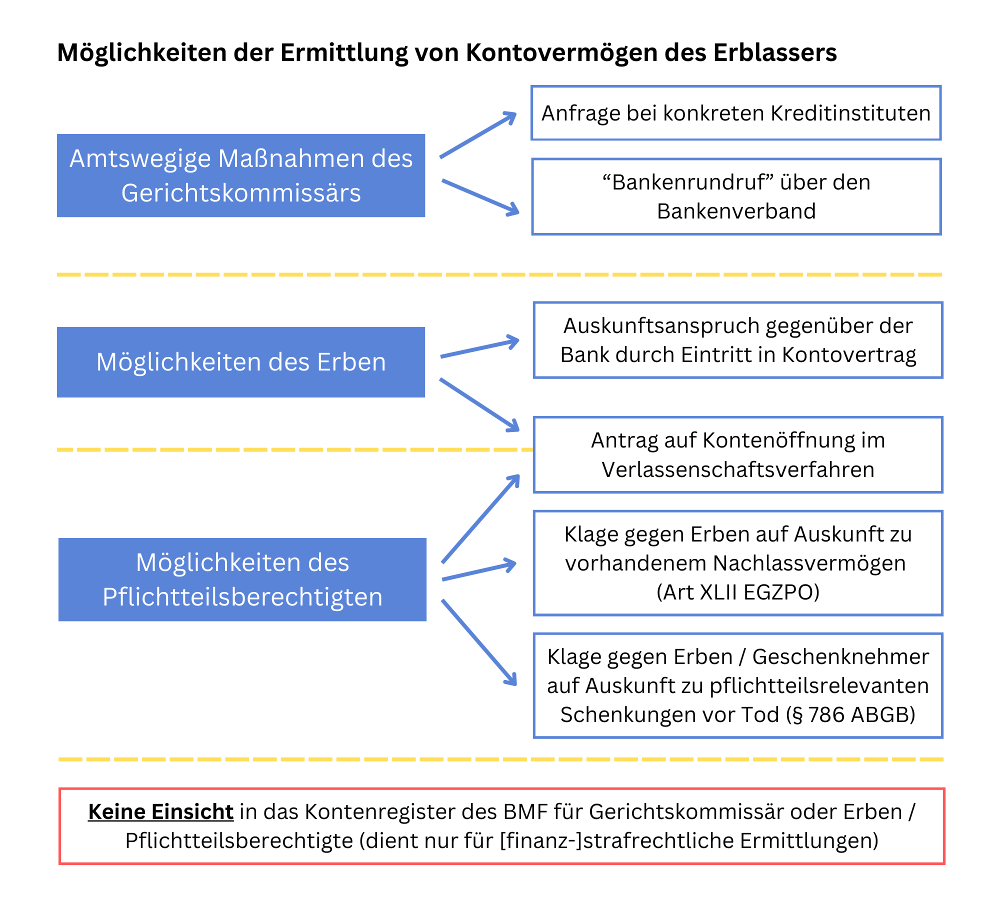

Die Kontenöffnung im Verlassenschaftsverfahren
Die Feststellung des Vermögens des Verstorbenen stellt einen zentralen Bestandteil des Verlassenschaftsverfahrens dar. Bereits für die Entscheidung, ob ein Verlassenschaftsverfahren durchzuführen oder mangels hinreichenden Vermögens zu unterbleiben hat (§ 153 AußStrG), sind die Vermögenswerte des Erblassers festzustellen. Häufig befinden sich Vermögenswerte des Erblassers in der Gewahrsame von Kreditinstituten und ist deren Auffindung gelegentlich mit Schwierigkeiten verbunden. Die Kontenöffnung im Verlassenschaftsverfahren dient der Sicherung, Verwaltung und Abwicklung des Nachlasses und unterliegt klaren rechtlichen Vorgaben. Auch ergeben sich aus Kontoauszügen häufig Hinweise auf weitere Vermögenswerte des Erblassers, wie etwa Sparbücher und Wertpapiere.
Der vorliegende Beitrag beleuchtet hierbei die Rolle des Gerichtskommissärs (Notars) sowie welche rechtlichen Möglichkeiten und praktischen Herausforderungen sich für Erben und Pflichtteilsberechtigte bei der Feststellung des Vermögens ergeben.
Rechtliche Grundlagen der Kontenöffnung
Die rechtlichen Grundlagen der Kontenöffnung im Verlassenschaftsverfahren sind im Bankwesengesetz (BWG) und Außerstreitgesetz (AußStrG) zu finden.
Gemäß BWG besteht keine Verpflichtung zur Wahrung des Bankgeheimnisses gegenüber dem Verlassenschaftsgericht und dem Gerichtskommissär im Falle des Todes eines Kunden (§ 38 Abs 1 Z 3 BWG). Vielmehr sind Kreditinstitute gesetzlich verpflichtet, dem Gerichtskommissär und dem Verlassenschaftsgericht Auskunft über die Konten des Verstorbenen zu erteilen.
Der Notar als Gerichtskommissär wird im Verlassenschaftsverfahren per Gesetz von sich aus tätig, und ist in Folge für das gesamte Verlassenschaftsverfahren zuständig (§ 2 Abs 1 GKG). Seine operative Verantwortung erstreckt sich insbesondere auf die Sicherung und Dokumentation des Nachlasses sowie die Ermittlung des Vermögens des Verstorbenen. Im Rahmen der Ermittlung von Vermögenswerten hat der Gerichtskommissär hierbei auch das Recht auf Abfrage öffentlicher Register (insbesondere Firmenbuch und Grundbuch) und auf Auskünfte von Kreditinstituten (§ 145a AußStrG, § 38 Abs 2 Z 3 BWG). Das Gesetz ermöglicht dem Gerichtskommissär nicht nur die Einholung schriftlicher Auskünfte, sondern erforderlichenfalls auch die Vernehmung von Auskunftspersonen. Damit wird die Kontenöffnung sowie die Einsicht in die finanziellen Verhältnisse des Verstorbenen ermöglicht. Aufgrund der weitreichenden Befugnisse des Gerichtskommissärs im Verlassenschaftsverfahren sind gerichtliche Beschlüsse zur Kontenöffnung in der Regel nicht erforderlich. Sollte der Gerichtskommissär allerdings betreffend Anfragen an Kreditinstitute untätig sein (was in der Praxis nur selten vorkommt), bestünde die Möglichkeit sich mit einem Abhilfeantrag nach § 7a Abs 2 GKG an das Verlassenschaftsgericht zu wenden, welches dem Gerichtskommissär erforderlichenfalls Aufträge erteilen kann.
Bestehen Anhaltspunkte dafür, dass der Verstorbene Vermögenswerte bei einem konkreten Kreditinstitut (oder wenigen in Frage kommenden Kreditinstituten) hatte, etwa aufgrund von Angaben der Parteien in der Todesfallaufnahme, so wendet sich der Gerichtskommissär idR mit einer schriftlichen Anfrage an die betreffenden Kreditinstitute.
Bestehen lediglich Anhaltspunkte für Vermögenswerte bei irgendeinem Kreditinstitut in Österreich, gestaltet sich die Erhebung des Vermögens etwas aufwendiger, zumal in Österreich mehrere hundert Kreditinstitute bestehen ("Privatbanken", diverse Sparkassen und Regionalbanken). Hier hat sich aber in der Praxis die Möglichkeit etabliert, über den Verband österreichischer Banken und Bankiers an alle österreichischen Kreditinstitute Anfragen zu richten, um verlässlich abzuklären, ob der Verstorbene unbekannte Bankguthaben hatte ("Bankenrundruf"). Hierfür muss es aber ein Mindestmaß an Anhaltspunkten geben, zumal der Gerichtskommissär zwar amtswegig tätig zu werden hat, aber nicht aktiv unbekanntes Vermögen aufzuspüren hat. Für das Kontenregister nach dem Kontenregister- und Konteneinschaugesetz (KontRegG) ist der Gerichtskommissär allerdings nicht abfrageberechtigt, zumal dieses nur als Beweismittel in strafrechtlichen, finanzstrafrechtlichen oder abgabenrechtlichen Ermittlungsverfahren dient. Aus diesem Grund bleibt in solchen Fällen lediglich der "Bankenrundruf" über den Bankenverband übrig.
Antrag auf Kontenöffnung betreffend Zeiträume vor dem Todestag
Da die Inventarerrichtung im Verlassenschaftsverfahren sich auf die Vermögenswerte und Verbindlichkeiten zum Todeszeitpunkt zu bezieht, holt der Gerichtskommissär in aller Regel auch nur Anfragen zum Vermögen bei Todeszeitpunkt ein.
Es kann aber notwendig sein, Kontobewegungen oder bereits beendete Geschäftsbeziehungen in Erfahrung zu bringen, die vor dem Todeszeitpunkt stattgefunden haben, um weiteres Vermögens des Erblassers festzustellen (z.B. Überweisungen an ein anderes noch unbekanntes Konto oder Überweisungen an Dritte trotz fehlender Geschäftsfähigkeit des Erblassers, sodass bereicherungsrechtliche Rückforderungsansprüche als Aktivum in der Verlassenschaft bestehen).
Insbesondere Pflichtteilsberechtigte haben ein Interesse, dass der Wert der Verlassenschaft korrekt festgestellt wird, da sich nach diesem die Höhe ihres Pflichtteils bemisst. Anders als Erben, die mit Rechtskraft der Einantwortung in sämtliche Kontoverträge eintreten, somit als Rechtsnachfolger des Erblassers (= Bankkunde) Auskünfte zu früheren Banktransaktionen begehren können, steht Pflichtteilsberechtigten ein solches Auskunftsrecht direkt gegenüber der Bank nicht zu.
Pflichtteilsberechtigte können allerdings auf Basis des AußStrG selbständig einen Antrag auf Kontenöffnung rückwirkend ab dem Todestag stellen. Die Kontenöffnung dient nicht nur der Ermittlung des Nachlasses, sondern gleichsam der Absicherung der Rechte Anspruchsberechtigter aus der Verlassenschaft. Ob solche Anträge vom Verlassenschaftsgericht zu bewilligen sind, hängt von den Einzelfallumständen und den vorhandenen Hinweisen ab, dass auf derartigen Konten Vermögenswerte liegen oder Vermögenswerte abgeflossen sind, die der Verlassenschaft zuzuordnen sind.
Nach einer richtungsweisenden Entscheidung des OGH zu 7 Ob 610/95 dürfe sich der Antrag nur auf Konten beziehen, deren Zuordnung zur Verlassenschaft zweifelsfrei oder aktenkundig sei. Zu 4 Ob 112/12t milderte der OGH dieses Erfordernis geringfügig ab, indem er erklärte, eine Kontenöffnung sei nur dann zulässig, wenn nach der Aktenlage deutliche Hinweise vorliegen würden, dass dadurch konkrete Aufschlüsse über das Vermögen des Erblassers zutage kommen würden. Zu eng darf dieses Kriterium jedoch jedenfalls nicht gesehen werden, wie der OGH wiederum zu 7 Ob 1/13t ausführte: Würde man verlangen, dass die aus der Kontenöffnung erhofften Aufschlüsse bereits im Antrag darzustellen sind, so wäre das Instrument praktisch wertlos. Die Suche nach Vermögenswerten, für deren Existenz es keine konkreten Anhaltspunkte gebe, falle hingegen nicht unter die Aufgaben des Gerichtskommissärs. Zusammengefasst muss es daher ein Mindestmaß an Anhaltspunkten geben, dass durch die Kontenöffnung weitere Vermögenswerte zu Tage treten.
In gewissen Fällen kann eine Kontenöffnung aber nicht nur für Pflichtteilsberechtigte, sondern auch für Erben interessant sein, etwa wenn vor dem Tod unrechtmäßige Kontobehebungen durch Dritte erfolgten und der Erbe bereicherungsrechtliche Ansprüche gegen Dritte geltend machen möchte, die dann im Inventar der Verlassenschaft als Forderung zu erfassen wären.
Parallel zu einer Kontenöffnung haben Pflichtteilsberechtigte gegenüber den Pflichtteilsschuldnern (also den Erben bzw. der Verlassenschaft) das Recht, Auskunft zu nachlassbezogenen Vermögenswerten zu erhalten und diese allenfalls klagsweise nach Art XLII Abs 1 Fall 1 EGZPO durchzusetzen (Stufenklage durch Klage auf Rechnungslegung bzw. Bekanntgabe eines Vermögens und Zahlung des sich hieraus ergebenden Betrages).
Für Schenkungen zu Lebzeiten, die einer Hinzurechnung unterliegen, besteht seit dem ErbRÄG 2015 weiters ein Auskunftsanspruch nach § 786 ABGB. Die Rechtsprechung hat nämlich bis zum ErbRÄG 2015 einen Auskunftsanspruch hinsichtlich Schenkungen verneint, wenn der Geschenknehmer nicht zugleich Erbe war. Auch die Kontenöffnung im Verlassenschaftsverfahren bezieht sich nämlich primär auf die Erhebung von zum Todeszeitpunkt vorhandenen Vermögenswerten, während die Auskunftspflicht nach § 786 ABGB sich auf vor dem Tod getätigte Schenkungen bezieht. Die Auskunftspflicht nach § 786 ABGB ist bei deren Verweigerung ebenso im Klagsweg gerichtlich durchzusetzen.
Die Einsichtsrechte von Erben und Vertretern der Verlassenschaft in verlassenschaftszugehörige Konten
Wie zuvor ausgeführt, haben Erben als Gesamtrechtsnachfolger des Erblassers die Möglichkeit, Auskunft zu früheren Kontobewegungen des Erblassers zu erhalten. Mit Rechtskraft der Einantwortung treten diese nämlich als Vertragspartei in die Rechtsbeziehungen zur Bank ein. Das Geheimhaltungsrecht des Bankkunden nach dem BWG wird nämlich nicht als höchstpersönlich angesehen.
Auch vor der Einantwortung haben Erben das Recht auf Einsicht in verlassenschaftszugehörige Konten, allerdings erst ab Abgabe der Erbantrittserklärung. Erst mit der Erbantrittserklärung sind die Erben zur Vertretung des Nachlasses befugt (§ 810 ABGB), sodass sie das Einsichtsrecht auf ihre Eigenschaft als gesetzlicher Vertreter der Verlassenschaft als Bankkundin stützen können. Der Gesetzgeber nimmt hier also in Kauf, dass Erben vor Abgabe ihrer Erbantrittserklärung das Haftungsrisiko nicht durch Einsicht in frühere Kontotransaktionen abschätzen können. Gleichermaßen wie erbantrittserklärte Erben ist auch der Verlassenschaftskurator als Vertreter des Nachlasses zur Konteneinsicht berechtigt.
Dem Gerichtskommissär stehen im Rahmen seiner Tätigkeit auch Sicherungsmaßnahmen zur Verfügung, wie die Beschränkung des Zugriffs auf Bankkonten oder deren Versiegelung (durch entsprechende Aufträge an die Bank). Die Ausübung solcher Sicherungsmaßnahmen liegt hierbei im pflichtgemäßen Ermessen des Gerichtskommissärs (§ 147 AußStrG).
Die obigen Ausführungen zur Einsicht in konkrete Konten gegenüber der Bank durch Erben bzw. Verlassenschaft stehen natürlich unter der Prämisse, dass die betreffenden Konten bekannt sind. In der verwaltungsgerichtlichen Rechtsprechung war weiters Thema, ob die Verlassenschaft bzw. die Erben als Gesamtrechtsnachfolger des Erblassers durch einen "Eigenantrag" nach § 4 Abs 4 KontRegG in das vom Bundesminister für Finanzen geführte Kontenregister einsehen dürfen. Wie zuvor ausgeführt, hat das Kontenregister gemäß § 4 Abs 1 KontRegG den Zweck der Beweisführung in strafrechtlichen, finanzstrafrechtlichen oder abgabenrechtlichen Ermittlungsverfahren. Der VwGH sprach aus, dass auch das Recht des Erblassers auf Auskunft aus dem Kontenregister höchstpersönlich ist, sohin weder auf die Verlassenschaft noch auf die Erben übergehen kann. Bei § 4 Abs 4 KontRegG handelt es sich nur um eine (spezialgesetzliche) Ausformung des durch das Grundrecht auf Datenschutz garantierten höchstpersönlichen Anspruchs auf Auskunft (VwGH 28.05.2025, Ro 2025/13/0001). Diese Rechtsprechung des VwGH ist nachvollziehbar, weil das Kontenregister einen öffentlich-rechtlichen Zweck hat, während das Bankgeheimnis (welches nicht höchstpersönlich ist), primär dem Schutz der Interessen des Kunden dient. Damit bleibt für das "Aufspüren" unbekannter Konten wiederum nur der "Bankenrundruf" des Gerichtskommissärs über den Bankenverband übrig.
Verlassenschaftszugehörigkeit und Inventarisierung
Die Inventarisierung im Rahmen eines Verlassenschaftsverfahrens hat primär den Zweck, eine vollständige Übersicht über alle nachlasszugehörigen Vermögenswerte zu schaffen und ihre jeweiligen Werte zum Zeitpunkt des Todes zu bestimmen. Der Gerichtskommissär entscheidet zunächst über die Aufnahme von Vermögensgegenständen ins Inventar, auch wenn deren Zugehörigkeit zur Verlassenschaft streitig oder unsicher ist. Soweit auch nur der Anschein einer Nachlasszugehörigkeit besteht, ist ein Vermögenswert grundsätzlich in das Inventar aufzunehmen.
Wird von einer Partei des Verlassenschaftsverfahrens die Behauptung bestritten, dass eine Sache zum Verlassenschaftsvermögen zählt, so hat das Gericht darüber zu entscheiden, ob diese Sache in das Inventar aufgenommen beziehungsweise ausgeschieden wird. Befand sich die Sache zuletzt im Besitz des Verstorbenen, so ist sie nur dann auszuscheiden, wenn durch unbedenkliche Urkunden bewiesen wird, dass sie nicht zum Verlassenschaftsvermögen zählt (§ 166 Abs 2 AußStrG).
Für Kontoguthaben bedeutet dies, dass wenn der Erblasser Kontoinhaber war, diese in das Inventar aufzunehmen sind, bei Gemeinschaftskonten im Zweifel zur Hälfte.
Die rechtliche Klärung umstrittener Vermögensrechte ist in Folge von etwaigen an diesen Vermögenswerten Berechtigten auf dem streitigen Rechtsweg zu klären.
Haben Sie noch Fragen zum Thema Kontenöffnung und Vermögensermittlung im Verlassenschaftsverfahren?
Eine frühzeitige Beratung schafft Klarheit und hilft, Risiken im Verlassenschaftsverfahren rechtzeitig zu vermeiden. Ich unterstütze Sie bei einer rechtssicheren Einschätzung Ihrer Situation.